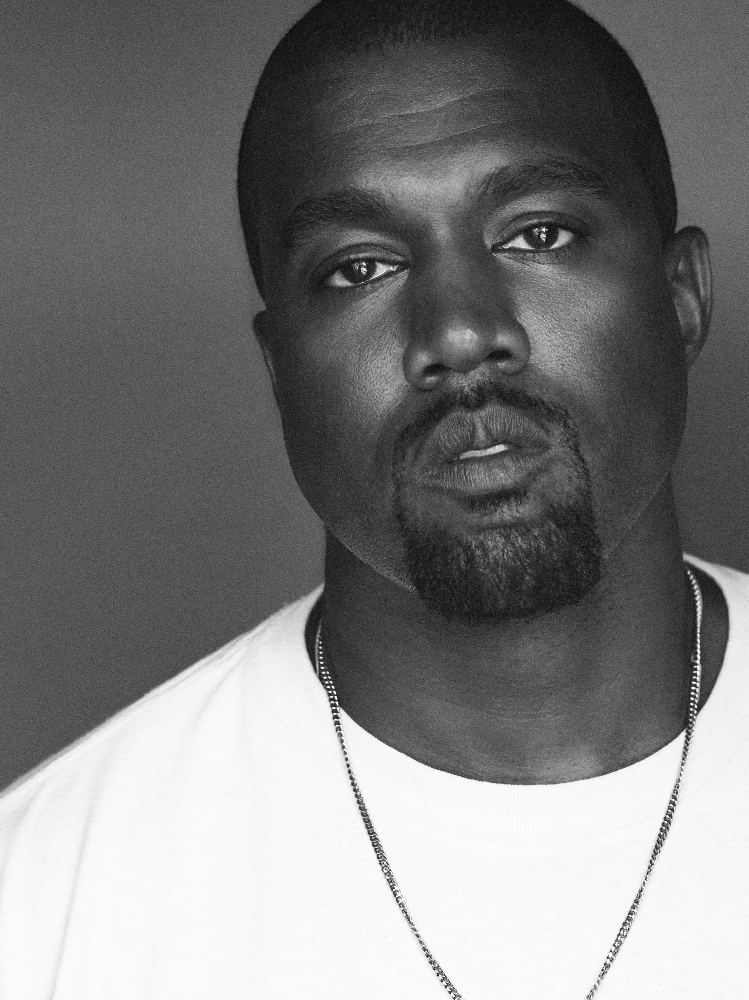

Producer First
Before his own records, he produced beats for Jay-Z's The Blueprint and other Roc-A-Fella releases, building his reputation from behind the boards.
PRODUCER — RAPPER — DESIGNER

kanye.jpg NOT FOUNDTwenty-one Grammy wins, a public feud with the ceremony that gave him most of them, and a discography that keeps rewriting what a rap album is allowed to sound like. Add a design practice that spilled off the stage and into sneakers, runways, and architecture models. This is the file on Ye — the music, the label, the silhouette.
VIEW THE RECORD ↓Born June 8, 1977 in Atlanta and raised in Chicago, Kanye West started out behind the boards — producing tracks for Jay-Z and other Roc-A-Fella artists before a car accident and a wired-jaw recovery pushed him in front of the mic. The College Dropout arrived in 2004 and rewired mainstream rap around soul samples, chipmunk vocals, and unfiltered honesty about class and ambition.
The decade that followed treated every album like a costume change: the orchestral maximalism of Late Registration, the vocoder heartbreak of 808s & Heartbreak, the operatic scale of My Beautiful Dark Twisted Fantasy, the industrial minimalism of Yeezus. Alongside the music, he built Yeezy into one of the best-selling sneaker franchises in history and pushed hip-hop further into fashion, architecture, and product design than almost anyone before him.
Before his own records, he produced beats for Jay-Z's The Blueprint and other Roc-A-Fella releases, building his reputation from behind the boards.
A near-fatal 2002 car crash left his jaw wired shut. Weeks later he recorded "Through the Wire" rapping with a still-wired jaw.
808s & Heartbreak traded rapping for sung, vocoder-heavy hooks — a left turn that quietly rewired the sound of pop and rap for the decade after.
His partnership with adidas turned Yeezy into one of the best-selling sneaker lines ever, before the deal was terminated in late 2022.
Donda was previewed through a series of massive stadium listening events rather than a conventional rollout, turning the album launch into a performance in itself.
He has credited work spanning furniture, architecture concepts, and creative direction — treating album eras as full visual identities, not just sound.
Every album came with its own uniform. Tap a season to restyle the page and pull its file card.
Soul samples sped into chipmunk vocals, sung hooks from guest choirs, and bars about student debt and self-doubt. The debut that made "backpack rap" commercially unavoidable.
No dedicated single for this era — it's a fashion line, not an album.